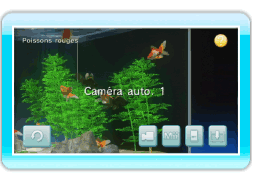

13 |
Caméra |
 |
|
Pointez
 pour changer de caméra et observer l’aquarium sous un autre angle. pour changer de caméra et observer l’aquarium sous un autre angle.Appuyez sur

Il y a cinq types de caméra. Pointez
pour passer de l’une à l’autre.
Note: si vous laissez l’écran de l’aquarium affiché pendant dix minutes sans toucher à rien, la caméra repasse en mode caméra auto. 1. Elle ne change pas lorsqu’un poisson ou un Mii sont sélectionnés (voir section 14 “Nager avec un Mii”).
|
 pour réinitialiser la caméra.
pour réinitialiser la caméra. |
 |
 |